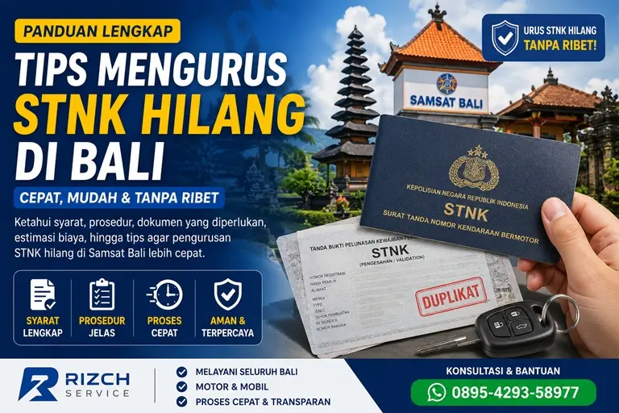

Banyak masyarakat masih bingung mengenai cara mengurus STNK hilang di Bali, mulai dari syarat dokumen, prosedur di Samsat, hingga estimasi biaya pengurusan duplikat STNK. Padahal jika tidak segera diurus, kendaraan dapat terkena kendala saat pemeriksaan polisi, pembayaran pajak, maupun proses administrasi kendaraan lainnya.
Melalui artikel ini, Rizch Service akan membahas secara lengkap prosedur pengurusan STNK hilang di Bali terbaru, termasuk informasi perpanjang STNK Bali, balik nama kendaraan, dan layanan administrasi kendaraan lainnya di Bali. mulai dari persyaratan, tahapan proses, biaya, hingga tips agar pengurusan lebih cepat dan aman.
Apa yang Harus Dilakukan Saat STNK Hilang?
Ketika STNK kendaraan hilang, pemilik kendaraan sebaiknya segera melakukan pengurusan dokumen pengganti atau duplikat STNK agar kendaraan tetap memiliki dokumen resmi yang sah.
Langkah pertama yang biasanya dilakukan adalah membuat laporan kehilangan di kantor kepolisian terdekat sebagai syarat administrasi pengurusan STNK baru di Samsat.
Mengapa STNK Hilang Harus Segera Diurus?
STNK merupakan dokumen resmi kendaraan bermotor yang wajib dibawa saat berkendara. Jika kendaraan tidak memiliki STNK, pemilik kendaraan dapat mengalami berbagai kendala hukum dan administrasi.
- Menghindari masalah saat pemeriksaan kendaraan
- Mempermudah pembayaran pajak kendaraan
- Mencegah penyalahgunaan STNK oleh pihak lain
- Mempermudah pengurusan administrasi kendaraan lainnya
- Menjaga legalitas kendaraan tetap aktif
Risiko Menggunakan Kendaraan Tanpa STNK
Menggunakan kendaraan tanpa STNK dapat menimbulkan risiko tilang, kendala administrasi, hingga kesulitan saat kendaraan akan dijual atau dilakukan balik nama kendaraan.
Syarat Mengurus STNK Hilang di Bali
Sebelum datang ke Samsat Bali, pastikan seluruh dokumen persyaratan sudah lengkap agar proses pengurusan berjalan lebih cepat.
Dokumen Persyaratan STNK Hilang
- KTP asli dan fotokopi pemilik kendaraan
- BPKB asli dan fotokopi
- Surat kehilangan dari kepolisian
- Fotokopi STNK jika tersedia
- Hasil cek fisik kendaraan
- Surat kuasa jika pengurusan diwakilkan
Syarat Mengurus STNK Motor Hilang
Untuk kendaraan roda dua, proses administrasi umumnya lebih sederhana namun tetap memerlukan dokumen lengkap terutama BPKB dan surat kehilangan dari kepolisian.
Syarat Mengurus STNK Mobil Hilang
Untuk kendaraan roda empat, beberapa Samsat biasanya melakukan verifikasi data kendaraan lebih detail terutama untuk kendaraan perusahaan atau kendaraan atas nama badan usaha.
Cara Mengurus STNK Hilang di Samsat Bali
Berikut langkah-langkah resmi pengurusan STNK hilang di Bali yang biasanya dilakukan di Samsat.
1. Membuat Surat Kehilangan di Kepolisian
Langkah pertama adalah membuat laporan kehilangan STNK di kantor polisi terdekat. Surat kehilangan ini menjadi syarat utama pengurusan duplikat STNK.
2. Melakukan Cek Fisik Kendaraan
Kendaraan wajib dibawa ke Samsat untuk dilakukan pemeriksaan nomor rangka dan nomor mesin kendaraan.
Petugas akan melakukan gesek nomor rangka dan nomor mesin sebagai bagian dari proses verifikasi kendaraan.
3. Menyerahkan Berkas Administrasi
Setelah cek fisik selesai, seluruh dokumen diserahkan ke loket pengurusan STNK hilang di Samsat.
Petugas akan memverifikasi data kendaraan dan identitas pemilik kendaraan sebelum proses dilanjutkan.
4. Pembayaran Biaya Administrasi
Jika seluruh data sudah sesuai, pemilik kendaraan akan menerima rincian biaya administrasi penerbitan STNK baru.
5. Penerbitan Duplikat STNK
Setelah pembayaran selesai, Samsat akan menerbitkan STNK pengganti atau duplikat STNK baru sesuai data kendaraan yang terdaftar.
Biaya Mengurus STNK Hilang di Bali
Biaya pengurusan STNK hilang di Bali berbeda tergantung jenis kendaraan dan status administrasi kendaraan.
Komponen Biaya Pengurusan STNK Hilang
- Biaya cek fisik kendaraan
- Biaya penerbitan STNK baru
- Biaya administrasi Samsat
- Biaya SWDKLLJ jika ada tunggakan
- Pajak kendaraan bermotor
Jika Anda juga ingin mengetahui prosedur administrasi kendaraan lainnya, silakan baca panduan perpanjang STNK di Bali dan balik nama kendaraan di Bali.
Estimasi Biaya STNK Motor Hilang
Untuk kendaraan roda dua, biaya pengurusan biasanya lebih ringan dibanding kendaraan roda empat.
Estimasi Biaya STNK Mobil Hilang
Untuk mobil pribadi maupun kendaraan perusahaan, biaya administrasi biasanya lebih tinggi karena nilai pajak kendaraan lebih besar.
Lokasi Pengurusan STNK Hilang di Bali
Berikut beberapa kantor Samsat di Bali yang melayani pengurusan STNK hilang:
- Samsat Denpasar
- Samsat Badung
- Samsat Gianyar
- Samsat Tabanan
- Samsat Bangli
- Samsat Klungkung
- Samsat Karangasem
- Samsat Singaraja
- Samsat Negara
Pengurusan STNK Hilang Kendaraan Luar Daerah
Jika kendaraan berasal dari luar Bali, biasanya diperlukan proses verifikasi tambahan sesuai data kendaraan dan wilayah registrasi kendaraan.
Pengurusan STNK Hilang Atas Nama Perusahaan
Untuk kendaraan perusahaan, biasanya diperlukan dokumen tambahan seperti surat perusahaan, NPWP perusahaan, dan surat kuasa pengurusan kendaraan.
Tips Agar Pengurusan STNK Hilang Lebih Cepat
- Segera buat laporan kehilangan di kepolisian
- Siapkan seluruh fotokopi dokumen sebelum datang ke Samsat
- Pastikan BPKB kendaraan masih tersedia
- Datang lebih pagi untuk menghindari antrean panjang
- Pastikan pajak kendaraan tidak menunggak
- Gunakan jasa terpercaya seperti Rizch Service jika tidak memiliki waktu mengurus sendiri
Jasa Pengurusan STNK Hilang Bali Terpercaya
Jika Anda tidak memiliki waktu untuk mengurus sendiri proses administrasi kendaraan, Rizch Service siap membantu pengurusan STNK hilang di seluruh Bali dengan proses cepat, aman, dan profesional.
Rizch Service melayani pengurusan STNK hilang motor maupun mobil, perpanjangan STNK, balik nama kendaraan, mutasi kendaraan, hingga pengurusan dokumen kendaraan lainnya di seluruh Bali.
Layanan Rizch Service
- Pengurusan STNK hilang motor
- Pengurusan STNK hilang mobil
- Perpanjang STNK tahunan
- Perpanjang STNK 5 tahunan
- Balik nama kendaraan
- Mutasi kendaraan
- Pengurusan pajak kendaraan Bali
Selain pengurusan STNK hilang, Rizch Service juga melayani berbagai kebutuhan dokumen kendaraan di seluruh Bali.
FAQ Seputar STNK Hilang di Bali
Ya, BPKB asli biasanya menjadi syarat utama dalam pengurusan duplikat STNK hilang di Samsat Bali.
Lama proses tergantung kelengkapan dokumen dan antrean Samsat, namun umumnya dapat selesai dalam beberapa hari kerja.
Ya, kendaraan biasanya wajib dibawa ke Samsat untuk proses cek fisik nomor rangka dan nomor mesin kendaraan.
Bisa, dengan melampirkan surat kuasa serta dokumen identitas pemilik kendaraan dan pihak yang mewakili.
Bisa, namun biasanya pengurusan duplikat STNK perlu dilakukan terlebih dahulu agar administrasi kendaraan kembali lengkap.
Bisa, selama pemilik kendaraan masih memiliki BPKB asli dan data kendaraan sesuai dengan data di Samsat.
Pengurusan tetap dapat dilakukan, namun pemilik kendaraan biasanya perlu menyelesaikan tunggakan pajak kendaraan terlebih dahulu.
Bisa, namun biasanya diperlukan proses verifikasi tambahan sesuai wilayah registrasi kendaraan asal.
Butuh Bantuan STNK Hilang di Bali?
Hubungi Rizch Service sekarang untuk konsultasi dan pengurusan STNK hilang dengan proses cepat, aman, dan terpercaya.
Konsultasi Gratis